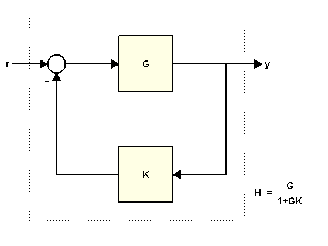
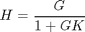
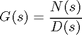
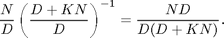
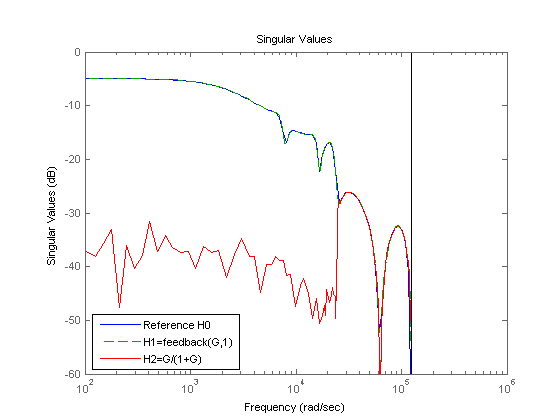

フィードバック ループを閉じるために FEEDBACK を使用
このデモでは、フィードバック ループを閉じるためになぜ常に FEEDBACK を使用すべきかについて説明します。
目次
フィードバック ループを閉じるための 2 通りの方法
次のようなフィードバック ループがあるとします。

ここで、
K = 2; G = tf([1 2],[1 .5 3])
Transfer function:
s + 2
---------------
s^2 + 0.5 s + 3
r から y への閉ループ伝達関数 H は、少なくとも次の 2 通りの方法で計算できます。
- feedback コマンドを使用する
- 次の式を使用する

feedback を使用して H を計算するには、次のように入力します。
H = feedback(G,K)
Transfer function:
s 2
---------------
s^2 2.5 s 7
式を使用して H を計算するには、次のように入力します。
H2 = G/(1+G*K)
Transfer function:
s^3 + 2.5 s^2 + 4 s + 6
-----------------------------------
s^4 + 3 s^3 + 11.25 s^2 + 11 s + 21
FEEDBACK を使用することがなぜ好ましいか
式を使用して H を計算する際に主な問題となるのは、閉ループ伝達関数の次数が上がることです。上記の例では、H2 の次数が H の 2 倍になっています。これは、式 G/(1+G*K) が、G と 1+G*K という 2 つの伝達関数の比率として評価されるためです。ここで、

上記の条件の場合、G/(1+G*K) は次のように評価されます。

その結果、G の極が H の分子と分母の両方に追加されます。このことは、次の ZPK 表現を見ることで確認できます。
zpk(H2)
Zero/pole/gain:
(s+2) (s^2 + 0.5s + 3)
---------------------------------
(s^2 + 0.5s + 3) (s^2 + 2.5s + 7)
このように極と零点が余分に追加されると、次の例で示すとおり、高次の伝達関数を処理する際に結果の精度が下がる可能性があります。この例には、17 次の伝達関数 G が含まれています。先ほどと同じように、2 通りの方法を両方使って、K=1 とした場合の閉ループ伝達関数を計算します。
load numdemo G H1 = feedback(G,1); % good H2 = G/(1+G); % bad
基準点を設定するため、G の周波数応答が含まれた FRD モデルも計算し、周波数応答データに feedback を直接適用します。
w = logspace(2,5.1,100); H0 = feedback(frd(G,w),1);
次に、閉ループ応答の振幅を比較します。
h = sigmaplot(H0,'b',H1,'g--',H2,'r'); legend('Reference H0','H1=feedback(G,1)','H2=G/(1+G)','location','southwest') setoptions(h,'YlimMode','manual','Ylim',{[-60 0]})
H2 の周波数応答は、周波数が 2e4 rad/sec より低い場合に不正確になります。この不正確性の原因としては、z=1 近傍で追加 (相殺) 的なダイナミクスが導入されていることが考えられます。具体的に言うと、H2 には、z=1 の近傍に H1 の約 2 倍の極と零点があります。その結果、H2(z) の z=1 近傍における精度が大幅に低くなり、低周波数での応答に歪みが生じます。詳細は、正しいモデル表現の使用のデモを参照してください。